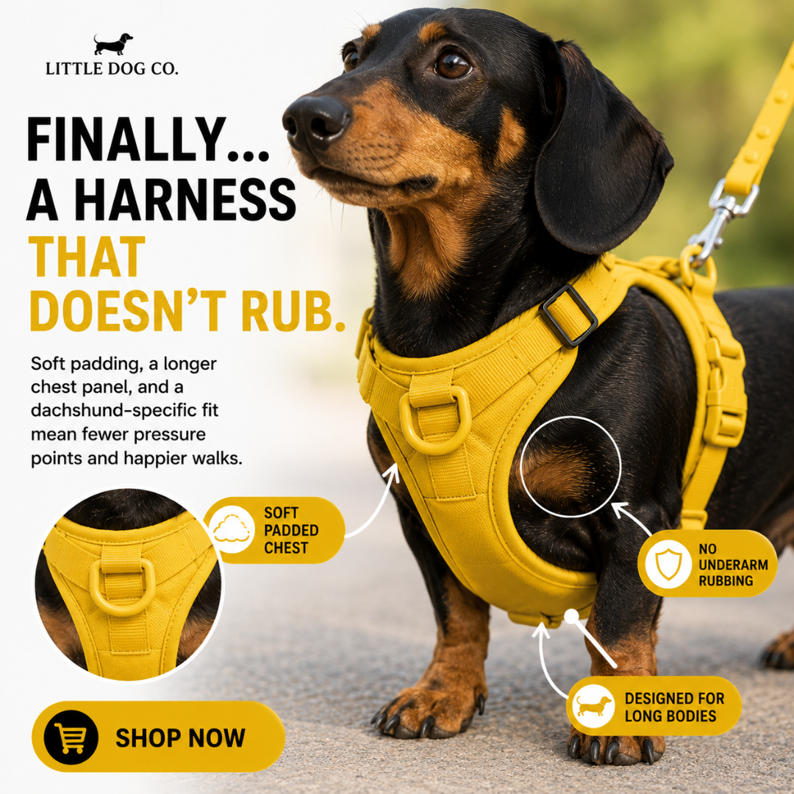
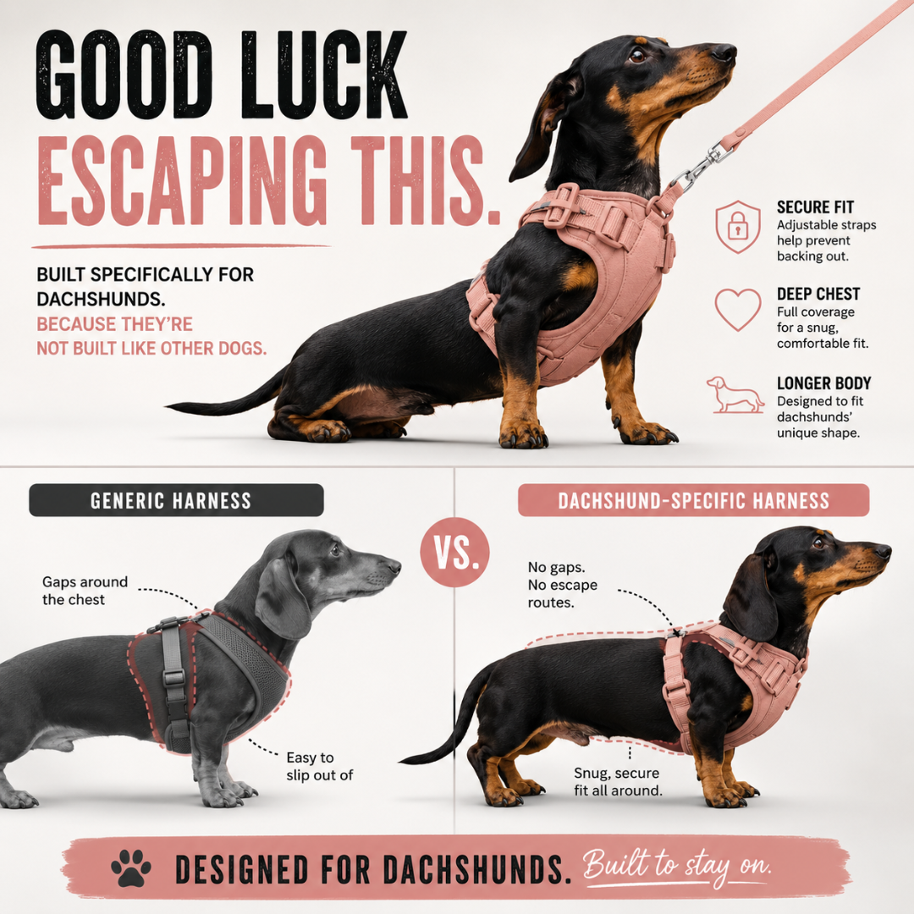
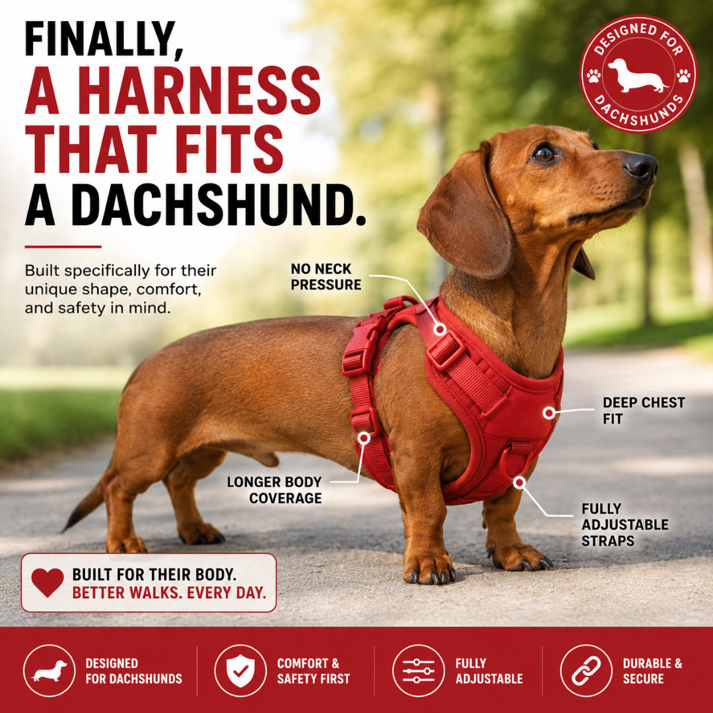
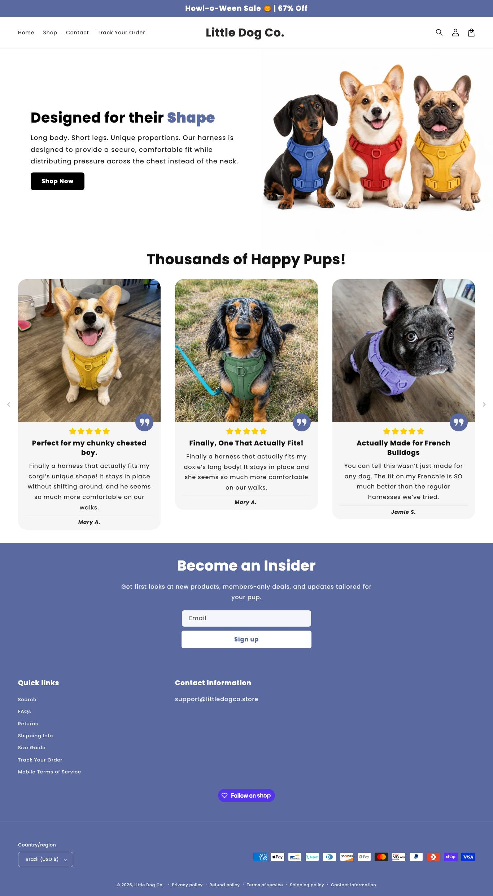
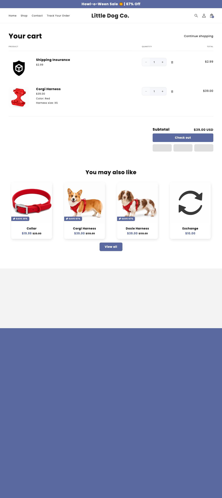

Peitoral 'feito para a sua raça' (Corgi, Frenchie, Dachshund), US$ 39. Loja de 3 meses que já roda 500+ anúncios ativos e 864 variações. É o molde de ângulo mais forte do nicho para quem está entrando agora: o mesmo peitoral, uma página e um anúncio por raça.
littledogco.storeativa desde 22/07/2026 (~3 meses); 1º anúncio ativo há 95 diasPlataforma: Shopify · tema Shrine Pro ('Little Dog Co. V6') · Klaviyo, Judge.me, GTM
13 produtos: o mesmo peitoral em 4 páginas (Little Dog Co., Corgi, Frenchie, Doxie), Complete Walk Set US$ 85, coleira US$ 19,99, porta-saquinho US$ 11,99, 'Lifetime Warranty' US$ 5 e 2 produtos 'Exchange' (US$ 10 e 15) para troca. Mediana US$ 19,99. observado
Ticket
mediana US$ 19,99 observado
02Mídia paga
≥500
anúncios ativos
1 página
observado · Meta, page_id
≥500
no histórico total
observado
indeterminada
sobrevivência (ativos ÷ histórico)
a fonte bateu o teto nas duas contagens
calculado
95 dias
criativo mais antigo ainda ativo
observado
Ritmo de criativo
Medida
Valor
Novos por dia
rajada: 603 anúncios do nicho em 95 dias, mas a maior parte foi criada em poucas levas (20 textos para 600 anúncios); não extrapolar para "por dia"
Únicos na amostra
textos/títulos únicos: 20 em 603 anúncios do nicho (1.484 variações)
Duplicação
30x (603 anúncios para 20 textos únicos)
Mix de formato
406 imagens, 178 vídeos, 18 DCO (amostra do nicho)
Nível de sofisticação
nível 2: imagem do cão da raça com texto curto, mais 178 vídeos e histórias em primeira pessoa ("How I finally stopped being dragged by my loaf")
Nota de contagem
Little Dog Co. (1205491262650471): 500 ativos, 500 no histórico [API 0/377 · Biblioteca pública 500/500]. Regra: maior valor por página entre a API oficial e a Biblioteca pública; a loja soma as páginas. Contém piso: o número real pode ser maior.
Google Ads
anuncia no Google: 49 anúncios
Momentum da operação
em teste acelerado. Loja de 3 meses com 500+ anúncios ativos (piso), 864 variações e 20 textos; mas o tráfego está abaixo de 20 mil visitas por mês (faixa "<20K", teto), o Tranco está caindo (4.656.228) e a visita dura 13 segundos, sinais de que a mídia roda mais forte do que o tráfego e a retenção mostram. Série mensal: não obtida. inferido
Leitura da amostrana página: 500 anúncios, 864 variações, mais antigo ainda ativo com 95 dias
BenchmarkBenchmark de custo da categoria: CPM US$ 14,19 (média geral Meta 2025; até US$ 24,50 em Vendas) · CPC US$ 0,61 a 0,96 (pet care, proxy fraco) · CPA US$ 38,19 (média geral; pet care US$ 15,29, proxy fraco). Fonte: Triple Whale 2025 e pesquisa web de 29/10/2026.
03Ranking de criativos vencedores
Criativo campeão: 95 dias no ar (o mais antigo da amostra desta loja).

ESTÁTICO
Little Dog Co.
Built for dachshunds
Standard harnesses were built for average dogs. Dachshunds aren't average. The Doxie Harness wraps their long backs, deep chests, and sensitive spines
no ar há 95 dias · desde 27/07/2026
ativo

ESTÁTICO
Little Dog Co.
Built for dachshunds
Standard harnesses were built for average dogs. Dachshunds aren't average. The Doxie Harness wraps their long backs, deep chests, and sensitive spines
no ar há 95 dias · desde 27/07/2026
ativo

ESTÁTICO
Little Dog Co.
{{product.name}}
{{product.brand}}
no ar há 95 dias · desde 27/07/2026
ativo
Prova do anúncio
Little Dog Co.
Standard harnesses were built for average dogs. Dachshunds aren't average. The Doxie Harness wraps their long backs, deep chests, and sensitive spines in a soft, secure fit that actually works, no slipping, no rubbing, no escaping.
não obtidoa Meta não publica gasto para e-commerce fora dos recortes regulatórios
O que isso prova
Que este anúncio está no ar há 95 dias e a página segue investindo no ângulo.
O que isso não prova
Escala, gasto, faturamento ou lucro.
Prova do anúncio
Little Dog Co.
Standard harnesses were built for average dogs. Dachshunds aren't average. The Doxie Harness wraps their long backs, deep chests, and sensitive spines in a soft, secure fit that actually works, no slipping, no rubbing, no escaping.
não obtidoa Meta não publica gasto para e-commerce fora dos recortes regulatórios
O que isso prova
Que este anúncio está no ar há 95 dias e a página segue investindo no ângulo.
O que isso não prova
Escala, gasto, faturamento ou lucro.
Ordem por dias no ar (o mais antigo ainda ativo é o vencedor mais provável): 95 dias ↗ · 95 dias ↗ · 95 dias ↗. Longevidade do campeão: 95 dias.
04Tráfego
abaixo de 20 mil
visitas mensais
SimilarWeb 10/2026
observado · SimilarWeb 10/2026
2.820.136
rank global
rank no país: 785.842
observado
61%
bounce
2,64 páginas por visita · duração 0:13
observado
EUA 100%
países de origem
Tranco 4.656.228, caindo
observado
TráfegoSérie mensal de 3 meses: não obtidoo gráfico do SimilarWeb não expõe os valores em texto. Split entre tráfego pago e orgânico: não obtidoSimilarWeb gratuito não separa.
05Faturamento e investimento
até US$ 22.500
Faturamento mensal estimado: só o teto
o tráfego é a faixa "<20K" (teto); central e piso não estimados
inferido
não obtido
central e piso da faixa
o SimilarWeb só devolveu a faixa abaixo de 20 mil
observado
não obtido
investimento em mídia/mês
a Meta não publica gasto de e-commerce fora da UE
observado
Confiança do faturamento
estimado incerto, só teto: até 20 mil visitas (faixa "<20K") x conversão x ticket de US$ 45; o real pode ser bem menor
Reviews
158 (Judge.me)
NotaNão mostro ROAS: seria uma conta circular (gasto estimado a partir do mesmo dado).
06Páginas capturadas: home, PDP e carrinho
HOME

PDP · Corgi Harness
CARRINHO

07Anatomia do vencedor
Camada
O que é
Big idea
Peitorais comuns foram feitos para o cão médio. O seu não é médio.
Mecanismo
o mesmo peitoral apresentado como 'feito para' o corpo da raça (costas longas do dachshund, peito largo do frenchie, pernas curtas do corgi).
Gancho
'Built for dachshunds', 'Built for Corgis', 'Built for Frenchies': 'no riding up, no rubbing, no slipping loose'
Estrutura
imagem do cão da raça usando o peitoral + texto curto de 3 frases; 20 textos para 600 anúncios
Objeção atacada
'peitoral não serve no meu cão' (tamanho e formato)
O que copiar e o que evitar
CopiarO recorte por raça: uma página e um conjunto de anúncios por raça, todos com o mesmo produto. Responde direto à objeção de tamanho.
Não copiarCobrar a troca de tamanho (US$ 10 a 15) e vender 'garantia vitalícia' de US$ 5: é exatamente a fricção que o mentorado vai tirar.
08Oferta, stack e canais
Frete
Free Shipping
Garantia
30 dias para item sem uso; vende "Lifetime Warranty" por US$ 5
Prazo de envio
não obtido: a página consultada não informa prazo
BNPL/parcelamento
Zip na home
Guia de tamanho
Size Guide; cobra a troca (produtos 'Exchange' de US$ 10 e 15)
Tech stack
Shopify, tema Shrine Pro ("Little Dog Co. V6"), Klaviyo, Judge.me, GTM
Pixel da Meta
não detectado no HTML público
Redes sociais
nenhum perfil social linkado
09Dados não obtidos
Dado
Motivo
Consequência
Anúncios ativos exatos
a Biblioteca pública bateu o teto de 500 e a API oficial devolve 0 ativos (não expõe anúncios só-EUA)
500 é piso; a mineração achou 524 ativos na página
Série mensal de visitas
gráfico sem valores em texto
momentum por rank, Tranco e duração da visita
Pixel da Meta
não detectável no HTML público
não afirmado
10Selos, scorecard e veredito
DROPSHIP DE MARCA
modelo (3 níveis)
inferido
MODELAR
veredito
recomendado
NÍVEL MÉDIO
nível de execução (soma do scorecard: 7/12)
inferido
ARBITRAGEM
defensabilidade
Baixa a média. Ângulo forte e copiável; tráfego abaixo de 20 mil visitas/mês (faixa do SimilarWeb) e visita média de 13 segundos, pequeno perto de 500+ anúncios: ou o anúncio leva a outra página/loja, ou está em teste pesado.
inferido
Eixo do scorecard
Pontos (0 a 2)
Leitura
Sourcing simples
1
o mesmo peitoral em 4 páginas por raça, 44 variantes
Ticket fecha sem escada complexa
1
US$ 39 no core; sets e garantia vitalícia de US$ 5 ajudam
Criativo simples de produzir
1
imagem por raça é simples, mas o volume (864 variações) é alto
Mecanismo com urgência
2
dor física e medo de errar o tamanho
Investimento de entrada baixo
0
500+ anúncios pedem verba que o iniciante não tem
Sem dependência de autoridade de marca
2
vende no encaixe por raça, sem marca construída
Soma
7/12
10 a 12 iniciante, 6 a 9 médio, 0 a 5 avançado
Gate de nicholittledogco.store foi conferida no catálogo: o produto campeão é Corgi Harness, da categoria do nicho.